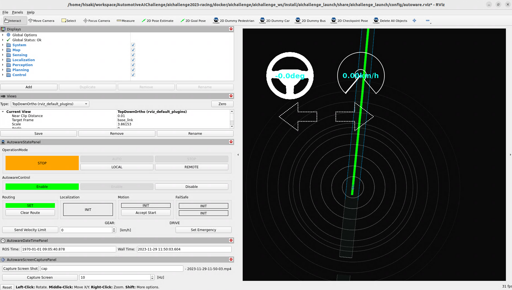

SetUp
REGISTER
こちらから参加登録! https://www.jsae.or.jp/jaaic/en/index.php
Minimum Hardware Requirements
- OS: Ubuntu 22.04
- CPU: Intel Corei7 (8 cores) or higher
- GPU: NVIDIA Geforce RTX 1060 or higher
- Memory: 32 GB or more
- Storage: SSD 30 GB or higher
For Those Using Two PCs
Autoware PC
- OS: Ubuntu 22.04
- CPU: Intel Corei7 (4 cores) or higher
- GPU: NVIDIA Geforce GTX 1060 or higher
- Memory: 16 GB or higher
- Storage: SSD 10 GB or higher
- DetailsHere
AWSIM PC
- OS: Ubuntu 22.04
- CPU: Intel Corei7 (4 cores and 8 threads) or higher
- GPU: NVIDIA Geforce RTX 1060 or higher
※"Please place the Autoware operation PC and the AWSIM operation PC within the same network. If they are properly configured, topic communication between PCs is possible without any additional settings. If, by any chance, topic communication is not possible, please disable the firewall or review its rules."
For Those Using CPU Only PCs
Minimum Hardware Requirements for Headless mode
"We may not be able to fully support the operational environment of PCs used in this competition. However, to encourage more people to participate in the contest and engage in active discussions, we have experimentally made it possible to participate with the following CPU-only configuration.
- OS: Ubuntu 22.04
- CPU: Intel Core i7-8650U (4 cores) with Intel HD Graphics (no NVIDIA GPUs)
- Memory: 16 GB or more
- Storage: SSD 16 GB or higher
- other CPU only cases
CPU : AMD Ryzen 5 5600G with Radeon Graphics
Memory : 32GB
CPU AMD® Ryzen 7 pro 4750u with radeon graphics × 16
Memory 32.0 GiB
DELL XPS 13 9300
CPU: Intel(R) Core(TM) i7-1065G7
Memory: 16GB
Environment Setup
AWSIM(Ubuntu)
preparation
(Skip this step if you are using a CPU only or already have NVIDIA Driver installed) Installing Nvidia drivers.
- add repo、update、install
sudo add-apt-repository ppa:graphics-drivers/ppa sudo apt update sudo ubuntu-drivers autoinstall- after restart、make sure you can run below command
nvidia-smi
install Vulkun
- update package list
sudo apt update sudo apt install libvulkan1prepare curse
- GoogleDrive Download Link place
AWSIM.ziptoaichallenge2023-racing/docker/aichallenge - permission change

- double click file to run simulator
- Ensure that the GPU version of AWSIM displays a screen like the one shown below.
(CPU version of AWSIM does not displays anything)

- GoogleDrive Download Link place
Docker Preparation
Install below
- docker
- rocker
- This is used for running GUI applications like Rviz, rqt, etc., inside Docker containers.
- git lfs
The following commands will install docker, rocker, and git lfs.
sudo apt-get update
sudo apt-get install ca-certificates curl gnupg
sudo install -m 0755 -d /etc/apt/keyrings
curl -fsSL https://download.docker.com/linux/ubuntu/gpg | sudo gpg --dearmor -o /etc/apt/keyrings/docker.gpg
sudo chmod a+r /etc/apt/keyrings/docker.gpg
echo \
"deb [arch="$(dpkg --print-architecture)" signed-by=/etc/apt/keyrings/docker.gpg] https://download.docker.com/linux/ubuntu \
"$(. /etc/os-release && echo "$VERSION_CODENAME")" stable" | \
sudo tee /etc/apt/sources.list.d/docker.list > /dev/null
sudo apt-get update
sudo apt-get install docker-ce docker-ce-cli containerd.io docker-buildx-plugin docker-compose-plugin
sudo docker run hello-world
# rocker install
sudo apt-get install python3-rocker
# gitlfs install
curl -s https://packagecloud.io/install/repositories/github/git-lfs/script.deb.sh | sudo bash
sudo apt-get install git-lfs
git lfs install
- (For those who use CPU only PC skip this step)Nvidia Container Toolkit
distribution=$(. /etc/os-release;echo $ID$VERSION_ID) \
&& curl -fsSL https://nvidia.github.io/libnvidia-container/gpgkey | sudo gpg --dearmor -o /usr/share/keyrings/nvidia-container-toolkit-keyring.gpg \
&& curl -s -L https://nvidia.github.io/libnvidia-container/$distribution/libnvidia-container.list | \
sed 's#deb https://#deb [signed-by=/usr/share/keyrings/nvidia-container-toolkit-keyring.gpg] https://#g' | \
sudo tee /etc/apt/sources.list.d/nvidia-container-toolkit.list
sudo apt-get update
sudo apt-get install -y nvidia-container-toolkit
sudo nvidia-ctk runtime configure --runtime=docker
sudo systemctl restart docker
sudo docker run --rm --runtime=nvidia --gpus all nvidia/cuda:11.6.2-base-ubuntu20.04 nvidia-smi
# +-----------------------------------------------------------------------------+
# | NVIDIA-SMI 450.51.06 Driver Version: 450.51.06 CUDA Version: 11.0 |
# |-------------------------------+----------------------+----------------------+
# | GPU Name Persistence-M| Bus-Id Disp.A | Volatile Uncorr. ECC |
# | Fan Temp Perf Pwr:Usage/Cap| Memory-Usage | GPU-Util Compute M. |
# | | | MIG M. |
# |===============================+======================+======================|
# | 0 Tesla T4 On | 00000000:00:1E.0 Off | 0 |
# | N/A 34C P8 9W / 70W | 0MiB / 15109MiB | 0% Default |
# | | | N/A |
# +-------------------------------+----------------------+----------------------+
# +-----------------------------------------------------------------------------+
# | Processes: |
# | GPU GI CI PID Type Process name GPU Memory |
# | ID ID Usage |
# |=============================================================================|
# | No running processes found |
# +-----------------------------------------------------------------------------+
Preparing & Starting the Docker Image - Setting up Autoware
- Obtaining the Docker Image
docker pull ghcr.io/automotiveaichallenge/aichallenge2023-racing/autoware-universe-no-cudaAdd your account to the user group
sudo usermod -aG docker $USERConfirm that docker has been added to groups with the following command
groups $USER # $ USERNAME : USERNAME adm cdrom sudo ... dockerOnce confirmed, re-login
Check that the following display is visible in docker images
REPOSITORY TAG IMAGE ID CREATED SIZE ghcr.io/automotiveaichallenge/aichallenge2023-racing/autoware-universe-no-cuda latest 9601fc85f1bd 3 weeks ago 7.31GB- Downloading Competition Data
sudo apt install -y git-lfs git lfs clone https://github.com/AutomotiveAIChallenge/aichallenge2023-racing- Building the Competition Docker Image
cd aichallenge2023-racing/docker/train bash build_docker.sh- Starting the Competition Docker Container
For GPU environments
bash run_container.shFor CPU only environments
bash run_container_cpu.sh
Starting AWSIM in a Docker Container
If you want to start AWSIM from a Docker container, follow the Docker image preparation steps (described previously) to install the Docker image, and then proceed with the following steps:
- Extract the competition's AWSIM executable file into
aichallenge2023-racing/docker/aichallenge(for the purposes of this guide, we will assume it's located ataichallenge2023-racing/docker/aichallenge/AWSIM/AWSIM.x86_64). - Start rocker
Open a new terminal and confirm that an image like the one below exists with
docker image ls.
REPOSITORY TAG IMAGE ID CREATED SIZE
aichallenge-train latest 67a4d45d119d 16 minutes ago 7.37GB
Once confirmed, start rocker with the following commands.
For GPU environments
cd ./aichallenge2023-racing/docker/train
bash run_container.sh
For CPU-only environments
cd ./aichallenge2023-racing/docker/train
bash run_container_cpu.sh
In the new terminal, confirm that docker exists as shown below with docker images.
REPOSITORY TAG IMAGE ID CREATED SIZE
aichallenge-train latest 67a4d45d119d 16 minutes ago 7.37GB
- Execute the following inside the container
cd /aichallenge
bash run_awsim.sh
Note
The messages published and subscribed by AWSIM are partially defined in /aichallenge/aichallenge_ws/src/sim-msgs. To handle these messages, please execute the following commands.
cd /aichallenge
bash build_autoware.sh
source /aichallenge/aichallenge_ws/install/setup.bash
Placement of Map Data OSM Work in Progress (WIP)
For this competition, we have allowed modifications to the lanelet2_map file. Please place it in /aichallenge2023-racing/docker/aichallenge/aichallenge_ws/src/aichallenge_submit/aichallenge_submit_launch/map/*, ensuring the file structure is as follows:
aichallenge2023-racing
└ docker
└ aichallenge
└ AWSIM
└ aichallenge_ws/src/aichallenge_submit/aichallenge_submit_launch
└map
└lanelet2_map.osm
※ There are no constraints such as having to refer to the lanelet2_map for route planning (referring to a csv file to generate routes is also permissible). ※ PCD files are included, but there is no need to submit them this time. Use them only if necessary for editing the map.
Autoware
- Checking Autoware Operation
Here we describe how to check Autoware's operation using AWSIM.- Start AWSIM
- Start Autoware
# Inside the Rocker container cd /aichallenge bash build_autoware.sh bash run_autoware.sh- Ensure that a screen like Rviz2 is displayed as shown below. And Confirm that the route is displayed as in the image and that
Routingchanges fromUNSETtoSET
Starting from the Second Time Onwards
- Starting AWSIM
- Start the container
cd ./aichallenge2023-racing/docker/train bash run_container.sh or bash run_container_cpu.sh- Start AWSIM inside the container
cd /aichallenge bash run_awsim.sh - Starting Autoware
- Start the container
cd ./aichallenge2023-racing/docker/train bash run_container.sh or bash run_container_cpu.sh- Build Autoware inside the container if necessary
cd /aichallenge bash build_autoware.sh- Start Autoware inside the container
cd /aichallenge bash run_autoware.sh
How to Record the Screen
The default rocker setup doesn't set the display driver to your own PC, so you need to add the following options:
#!/bin/bash
rocker --device /dev/dri --x11 --user ... # For CPU version
rocker --device /dev/dri --nvidia --x11 --user ... # For GPU version
Incorporating Changes
Updating Docker
docker pull ghcr.io/automotiveaichallenge/aichallenge2023-racing/autoware-universe-no-cuda
Updating the Repository
cd aichallenge2023-racing # path to aichallenge2023-racing
git pull origin/main